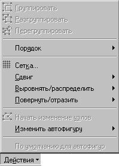

Для добавления подписи к объекту используйте следующую процедуру. Сведения о добавлении к подписи линии выноски содержатся в первом примечании после процедуры.
На панели инструментов Рисование нажмите
кнопку Надпись  .
.
Для вставки надписи стандартного размера
щелкните документ.
Для изменения размеров надписи используйте
перетаскивание. Для сохранения пропорций
надписи при перетаскивании удерживайте нажатой
клавишу SHIFT.
Перетащите надпись на нужное место.
Чтобы добавить к подписи линию выноски, нажмите кнопку Автофигуры на панели рисования, а затем выберите выноску нужного типа из списка Выноски.

Рисунок 8.3
Укажите, где следует вставить выноску, а затем введите ее текст. Размеры выноски изменяются путем перетаскивания ее маркеров изменения размера. Положение выноски изменяется путем перетаскивания.
Для преобразования надписи в любую автофигуру выделите надпись, нажмите кнопку Действия на панели рисования, выберите категорию из списка Изменить автофигуру, а затем выберите нужную фигуру.

Рисунок 8.4
Назад | Содержание | Вперед